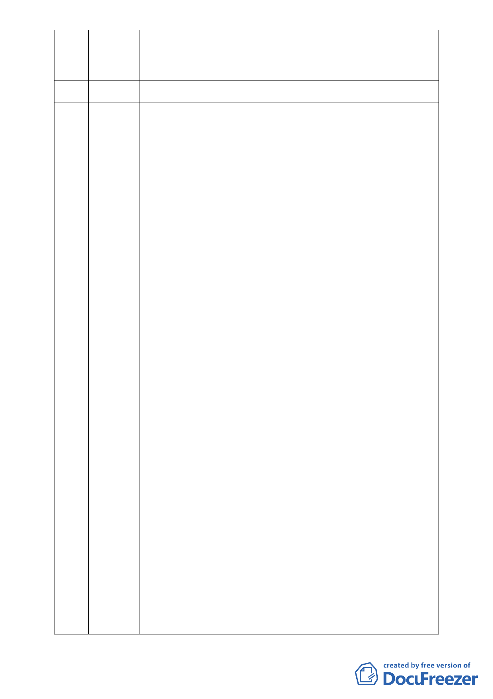

見給予合理性的開發。在 98 年 7 月代表內湖的 39 個里已經有 37 個
里長連署支持慈濟在此開發，故懇請委員比照歷年開發案例支持此
案。
19 許嘉珍 （離開會場）
20 鐘振盈 1、「慈濟內湖社會福利園區」，預計建設國際志工發展中心、救災調度與
訓練中心及社會教育中心，並進入都市計畫土地使用變更程序，意
圖將保護區變更為社會福利特定專用區。該計畫基地面積合計 46198
平方公尺，分為南、北二基地，因未達 5 公頃故不需進行環境影響評
估，此一解釋違法且錯誤。
2、依環評法開發行為應實施環境影響評估細目及範圍認定標準第
三
十一條其他開發行為，有下列情形之一者，應實施環境影響評估 :
第十二款、安養中心、護理機構或長期照護機構、養護機構、安養
機構等老人福利機構，其興建或擴建工程符合第一款第一目至第九目
規定之一。本案符合第一款第六目 : 位於山坡地、國家風景區或台
灣沿海地區自然環境保護計畫核定公告之一般保護區，申請開發或
累積開發面積一公頃以上，故依法應實施環境影響評估。
3、社會福利事業設施：指兒童、少年、婦女、老人、殘障福
利機構及社會救助設施。所稱老人安養院(中心)係指老人扶養
(安養)及老人療養(養護)機構。「慈濟內湖社會福利園區」原本
打算蓋兒童醫院，後來遭駁回，慈濟未放棄開發決心，變更計畫、
縮小面積後再次提案，打算在當地蓋一棟國際志工大樓，此案不符合
保護區變更容許之使用項目，純屬掛羊頭賣狗肉之行為。 此外，國
際志工發展中心應屬新市區開發，依認定標準第二十五條第(七)
位於山坡地或台灣沿海地區自然環境保護計畫核定公告之一般保護
區，申請開發或累積開發面積一公頃以上。且依環評法規定除第三
條至第三十一條及本法第五條第一項第十一款公告規定外，有下列
情形之一，屬主管機關認定其開發行為對環境有不良影響之虞者，
應實施環境影響評估，故依法應實施環境影響評估。
4、原已被認定不應開發之基地，是否可以改換名目，魚目混珠，
再行闖關？政府單位應審慎行事，否則未來如有釀成災禍，公務人
員及審查委員違法放行之責任將受追究，並應負連帶賠償責任。
5、慈濟資產富可敵國，大可以在郊外購買合法建築用地興建一棟所
謂的「國際志工大樓」，如若不是配合土地仲介炒作地皮，怎須以此
標準財團手法哄抬地價，進行破壞環境地球之惡劣行為？為何慈濟
在國外行善卻在國內造孽？環境保護是一功德、事業，奉勸慈濟人
- 14 -